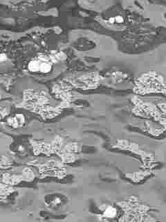

维州下冰雹，房子会怎样？
Hail, Roofs & Home Safety in Victoria
一场冰雹过去，汽车被砸出的凹痕容易发现，房子的损伤却可能藏在屋瓦、天窗、雨水槽或太阳能板上。更值得想一想的是：选什么材料、怎样维护、出了问题找谁，其实在下冰雹之前就该考虑。

雨棚用什么材料？先想想冰雹
照片的拍摄者说，装修时曾考虑玻璃雨棚，后来听取朋友建议，把本地冰雹天气的风险也算进去，最终没有选择玻璃。这是一个真实而朴素的房主决策：除了好不好看，还要想想长期使用和维修。
但这不等于玻璃雨棚一定不安全，也不意味着金属或聚碳酸酯板一定不怕冰雹。玻璃类型、厚度、跨度、支撑结构、产品耐冲击等级与安装方法都会影响结果。准备安装雨棚、天窗或户外顶棚时，应让合资格的设计或安装人员说明材料适用条件、当地规范和售后保修。
冰雹多大才危险？
澳大利亚气象局（Bureau of Meteorology，BOM）把直径2厘米及以上的冰雹称为大型冰雹（Large Hail）；达到5厘米及以上则属于巨型冰雹（Giant Hail）。前者是严重雷暴的判定条件之一，后者意味着更加危险的天气。
这不是住宅建材的安全分界线。冰雹撞击是否造成损害，还和风速、撞击角度、材料状况及原有老化程度有关。仅凭这张照片，没有标尺，也不能判断冰雹的实际直径或房屋是否受损。
冰雹过后，房主要看哪些地方？
- 屋顶与接缝（Roof / Flashing）：瓦片是否破裂、移位；金属屋面和泛水板有无明显损伤。
- 天窗与雨棚（Skylight / Awning）：玻璃、透明板及固定结构有无裂纹或松动。
- 太阳能系统（Solar PV）：面板、线缆或支架是否明显损坏。即使住宅总电源关闭，白天面板仍可能发电；不要触碰损坏的设备。
- 雨水槽与落水管（Gutters / Downpipes）：是否被冰雹、树叶或树枝堵塞，雨水能否正常排走。
- 室内天花板：之后的降雨中有无水渍、滴水或电器附近的潮湿迹象。
安全第一：不要自行上屋顶检查，也不要踩湿滑的梯子、触碰断落电线或打开受损的电气设备。远距离拍照，必要时请专业屋顶维修人员或持牌电工检查。
保险赔不赔？先看保单，再留证据
澳大利亚政府的 Moneysmart 指出，多数住宅及财物保险包括风暴损害，通常涵盖冰雹。但是否赔偿某个雨棚、太阳能板或屋顶损害，仍取决于具体保单、事故原因、免赔额、限额及除外责任。原有磨损和维护不足也可能影响理赔。
发现损坏后，在确保安全的前提下拍照、记录时间，尽快联系保险公司；了解检查和紧急维修程序。对于可能扩大损失的情况，应及时采取合理的安全防护措施，保存沟通记录、报价和收据。正式维修前先与保险公司确认要求，避免理赔争议。
出租房和有物业管理的小区，谁处理？
出租房：维州 Consumer Affairs Victoria 把严重屋顶漏水（Serious Roof Leak）、严重风暴损害（Serious Storm Damage）及危险电气故障列为紧急维修（Urgent Repairs）。租客应及时通知房主或中介；房主／出租提供方需要立即安排紧急维修，不能仅因等待保险理赔而不处理安全问题。
Owners Corporation（OC）：如果房屋属于有业主法人团体的小区，先向 OC Manager 或委员会报告，确认损坏部位是公共财产还是个别业主的产权范围，并核对建筑保险与维修分工。有 OC 不代表所有雨棚和屋顶都由物业负责，也不能一概认定保险自付额由谁承担。
延伸阅读：APOA 09《房屋持有与物业管理》，了解共同维护、保险与房主的长期持有成本。
五件值得提前准备的事
- 定期检查雨水槽、落水管与树枝，尤其是风暴季节前。
- 装修雨棚、天窗时，询问材料的耐候性、安装要求和保修。
- 留存屋顶、太阳能板及排水设施的检查与维修记录。
- 核对住宅／出租／OC 保险的承保项目、免赔额及报案方式。
- 把保险公司、维修商和紧急联系人放在容易找到的地方。
维州 SES（VICSES）提醒居民做好风暴准备。风暴造成紧急屋顶或树木等风险需要 SES 救援，可拨 132 500；危及生命的紧急情况请拨 000。SES 不是一般维修公司，非紧急修缮应另找合适的专业人员。
冰雹可能只下很短一段时间，房屋维修却可能持续很久。比起事后忙着找人修，日常维护、合适的材料选择和清楚的保险安排，同样重要。
英文资料与官方来源
核对日期：2026 年 11 月 7 日。本文为 APOA 非官方中文学习解读，不是官方译本；涉及法律和保险时，应以现行规定与具体保单为准。